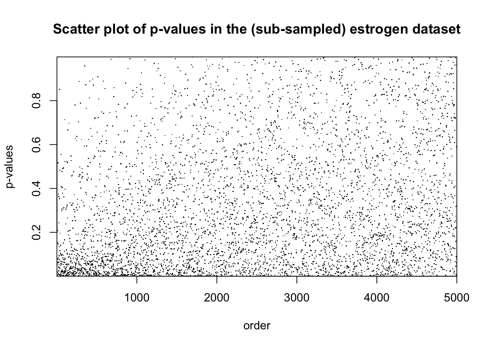
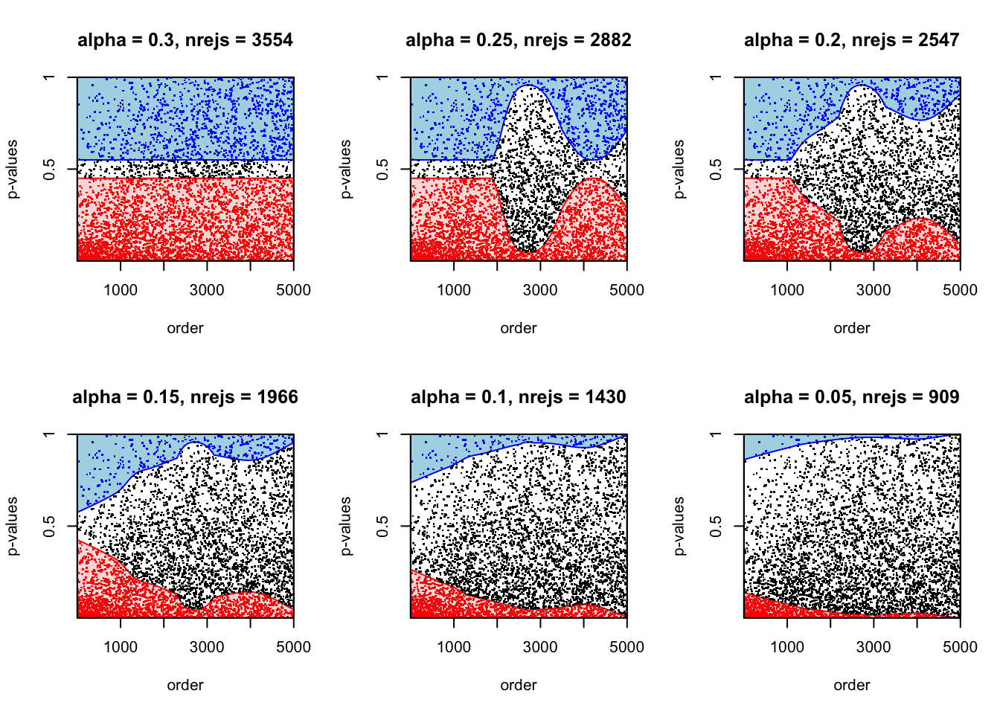
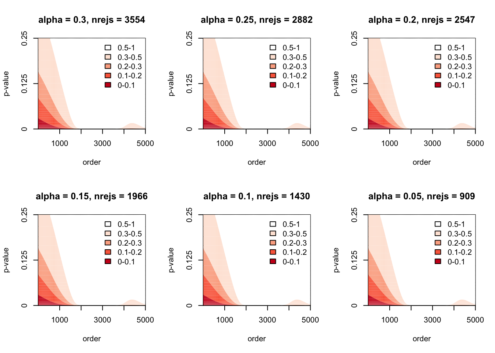
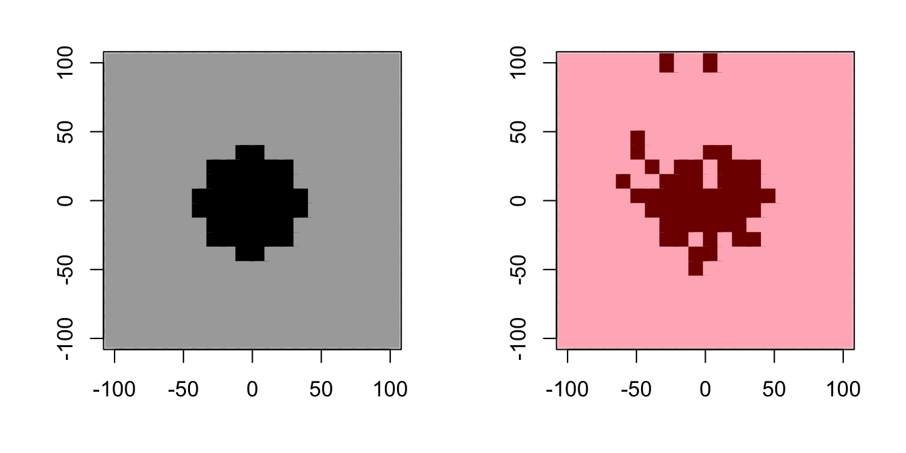
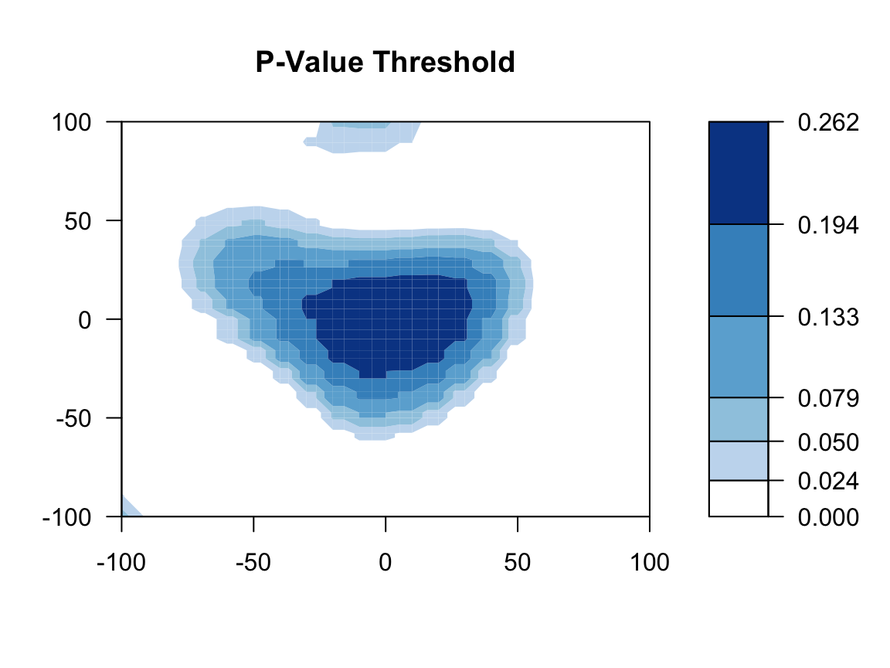
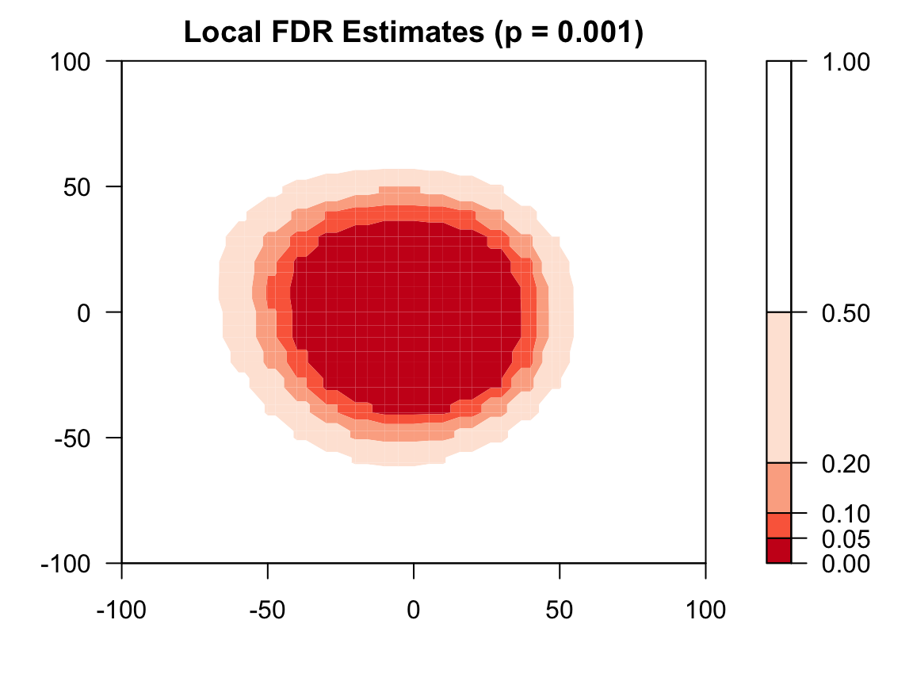
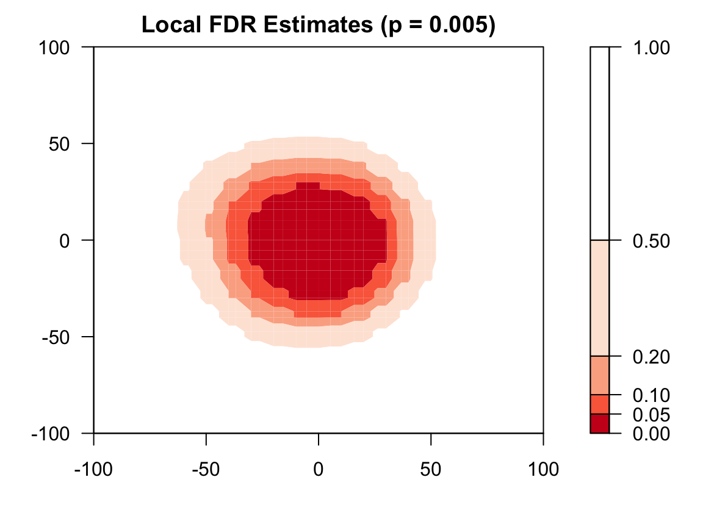
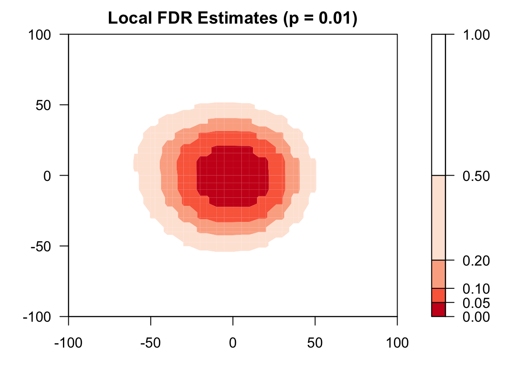
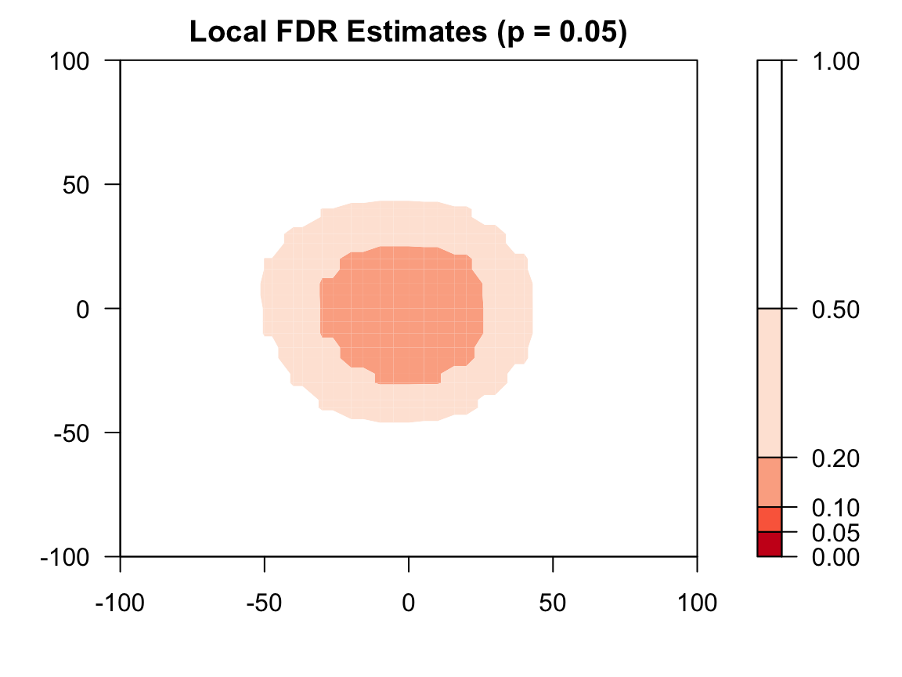

adaptMT packagevignettes/adapt_demo.Rmd
adapt_demo.RmdadaptMT package is an R implementation of Adaptive P-value Thresholding (Lei and Fithian 2016). adaptMT package has two main components: a generic interface that allows users to specify the working model and algorithms to fit them, as well as a pool of easy-to-use end-to-end wrappers. The former is captured by function adapt. The latter includes adapt_glm, adapt_gam and adapt_glmnet for using GLM, GAM and L1-regularized GLM.
# install the "adaptMT" package from github.
# will be submitted to CRAN very soon.
# devtools::install_github("lihualei71/adaptMT")
library("adaptMT")AdaPT is a flexible iterative protocol that allows almost arbitrary exploration of data while still guaranteeing the False Discovery Rate (FDR) control in finite samples under standard assumptions in literature. The pipeline of AdaPT is as follows:
The three red components allow unlimited user-flexibility, as the theoretical results in (Lei and Fithian 2016) guarantees the FDR control regardless of the implementation. To get rid of over-complication and minimize the user inputs, adaptMT package implements a slightly restrictive , though still flexible enough, pipeline which
exploits a conditional two-groups model as the working model (for EM pipeline), i.e. \[H_i \mid x_i \sim \pi(x_i), \quad p_i \mid H_i, x_i\sim \left\{\begin{array}{ll} \mathrm{Unif}([0, 1]) & H_i = 0\\ h(p_i; \mu(x_i)) & H_i = 1\end{array}\right..\] See Section 4.1 of (Lei and Fithian 2016) for details;
performs model selection via information criterion (BIC, AIC, etc.) based on the pseudo-likelihood from the EM algorithm; See Section 4.2 of (Lei and Fithian 2016) for details;
permits arbitrary algorithm to fit \(\pi(x)\) and \(\mu(x)\).
We refer the readers to (Lei and Fithian 2016) for more details.
adaptMT PackageadaptMT package provides three convenient wrappers adapt_glm, adapt_gam and adapt_glmnet, which generate the results in Section 5 of (Lei and Fithian 2016). In later versions we will add adapt_gbm (generalized boosting machine), adapt_rf (random forest), etc.. We recommend reading our paper first to familiarize with the basic concepts and scanning the documentation of them; See ?adapt_glm, ?adapt_gam, ?adapt_glmnet.
adapt_glm
We illustrate one of the main function adapt_glm, for AdaPT with logistic-Gamma GLM as the working model, on estrogen dataset, a gene/drug response dataset from NCBI Gene Expression Omnibus (GEO). estrogen dataset consists of gene expression measurements for \(n = 22283\) genes, in response to estrogen treatments in breast cancer cells for five groups of patients, with different dosage levels and 5 trials in each. The task is to identify the genes responding to a low dosage. The p-values pi for gene i is obtained by a one-sided permutation test which evaluates evidence for a change in gene expression level between the control group (placebo) and the low-dose group. \(\{p_i : i \in [n]\}\) are then ordered according to permutation t-statistics comparing the control and low-dose data, pooled, against data from a higher dosage (with genes that appear to have a strong response at higher dosages placed earlier in the list). The code to compute p-values and the ordering can be found in Rina Barber’s website.
Here we subsample the top 5000 genes for illustration. The results for the full dataset are given in Section 5.1 of (Lei and Fithian 2016).
# load the data.
data("estrogen")
# Take the first 5000 genes
if (!requireNamespace("dplyr")){
install.packages("dplyr")
}
#> Loading required namespace: dplyr
library("dplyr")
#>
#> Attaching package: 'dplyr'
#> The following objects are masked from 'package:stats':
#>
#> filter, lag
#> The following objects are masked from 'package:base':
#>
#> intersect, setdiff, setequal, union
estrogen <- select(estrogen, pvals, ord_high) %>%
filter(ord_high <= 5000)
rownames(estrogen) <- NULLhead(estrogen, 5)
#> pvals ord_high
#> 1 0.05011062 366
#> 2 0.71404053 4772
#> 3 0.06675970 3562
#> 4 0.40392007 790
#> 5 0.40614415 2291summary(estrogen)
#> pvals ord_high
#> Min. :0.000011 Min. : 1
#> 1st Qu.:0.076082 1st Qu.:1251
#> Median :0.238279 Median :2500
#> Mean :0.315094 Mean :2500
#> 3rd Qu.:0.501009 3rd Qu.:3750
#> Max. :0.999289 Max. :5000
Now we run adapt_glm on this dataset. adapt_glm takes a conditional logistic-Gamma GLM as the working model by default. Specifically, it models the p-values as \[H_i \mid x_i \sim \pi(x_i), \quad \mathrm{logit}(\pi(x_i))= \phi(x_i)^{T}\beta\] \[-\log p_i \mid H_i, x_i\sim \left\{\begin{array}{ll} \mathrm{Exp(1)} & H_i = 0\\ \mathrm{Exp(\mu(x))} & H_i = 1\end{array}\right., \quad \frac{1}{\mu(x_i)} = \phi(x_i)^{T}\gamma\] where \(\phi(x)\) is a featurization of \(x\). In this example, we use the spline bases, given by ns function from splines package. For illustration, we choose our candidate models as the above GLMs with \(\phi(x)\) being the spline bases with equal-spaced knots and the number of knots ranging from 6-10. We use BIC to select the best model at the initial stage and use the selected model for the following model fitting.
# prepare the inputs of AdaPT
# need "splines" package to construct the formula for glm
library("splines")
pvals <- as.numeric(estrogen$pvals)
x <- data.frame(x = as.numeric(estrogen$ord))
formulas <- paste0("ns(x, df = ", 6:10, ")")
formulas
#> [1] "ns(x, df = 6)" "ns(x, df = 7)" "ns(x, df = 8)" "ns(x, df = 9)"
#> [5] "ns(x, df = 10)"adapt_glm function provides several user-friendly tools to monitor the progress. For model selection, a progress bar will, by default, be shown in the console that indicates how much proportion of models have been fitted. This can be turned off by setting verbose$ms = FALSE. Similarly for model fitting, a progress bar can be shown in the console, though not by default, by setting verbose$fit = TRUE. Also, by default, the progress of the main process will be shown in the console that indicates (1) which target FDR level has been achieved; (2) FDPhat for each target FDR level; (3) number of rejections for each target FDR level.
# run AdaPT
res_glm <- adapt_glm(x = x, pvals = pvals, pi_formulas = formulas, mu_formulas = formulas)
#> Model selection starts!
#> Shrink the set of candidate models if it is too time-consuming.
#>
|
| | 0%
|
|========== | 20%
|
|==================== | 40%
|
|============================== | 60%
|
|======================================== | 80%
|
|==================================================| 100%
#> alpha = 0.29: FDPhat 0.2899, Number of Rej. 3474
#> alpha = 0.28: FDPhat 0.28, Number of Rej. 3325
#> alpha = 0.27: FDPhat 0.2698, Number of Rej. 3084
#> alpha = 0.26: FDPhat 0.2598, Number of Rej. 2925
#> alpha = 0.25: FDPhat 0.2498, Number of Rej. 2882
#> alpha = 0.24: FDPhat 0.2399, Number of Rej. 2834
#> alpha = 0.23: FDPhat 0.23, Number of Rej. 2761
#> alpha = 0.22: FDPhat 0.2198, Number of Rej. 2703
#> alpha = 0.21: FDPhat 0.2096, Number of Rej. 2595
#> alpha = 0.2: FDPhat 0.1998, Number of Rej. 2547
#> alpha = 0.19: FDPhat 0.1897, Number of Rej. 2398
#> alpha = 0.18: FDPhat 0.1797, Number of Rej. 2287
#> alpha = 0.17: FDPhat 0.1699, Number of Rej. 2231
#> alpha = 0.16: FDPhat 0.1599, Number of Rej. 2139
#> alpha = 0.15: FDPhat 0.15, Number of Rej. 2060
#> alpha = 0.14: FDPhat 0.1399, Number of Rej. 1966
#> alpha = 0.13: FDPhat 0.1297, Number of Rej. 1889
#> alpha = 0.12: FDPhat 0.1195, Number of Rej. 1824
#> alpha = 0.11: FDPhat 0.1097, Number of Rej. 1723
#> alpha = 0.1: FDPhat 0.0999, Number of Rej. 1582
#> alpha = 0.09: FDPhat 0.0895, Number of Rej. 1430
#> alpha = 0.08: FDPhat 0.0798, Number of Rej. 1240
#> alpha = 0.07: FDPhat 0.0697, Number of Rej. 1105
#> alpha = 0.06: FDPhat 0.0594, Number of Rej. 960
#> alpha = 0.05: FDPhat 0.0495, Number of Rej. 909
#> alpha = 0.04: FDPhat 0.0389, Number of Rej. 796
#> alpha = 0.03: FDPhat 0.0297, Number of Rej. 539
#> alpha = 0.02: FDPhat 0.0179, Number of Rej. 224plot_1d_thresh gives the plot for the rejection threshold as a function of x (must be univariate without repeated value) for given \(\alpha\). We display the plots for \(\alpha \in \{0.3, 0.25, 0.2, 0.15, 0.1, 0.05\}\).

plot_1d_lfdr gives the plot for the estimated local FDR as a function of x (must be univariate without repeated value) for given \(\alpha\). We display the plots for \(\alpha \in \{0.3, 0.25, 0.2, 0.15, 0.1, 0.05\}\). It is clear that the estimated local FDR almost remains the same, indicating that the information loss caused by partial masking is small.
par(mfrow = c(2, 3))
for (alpha in seq(0.3, 0.05, -0.05)){
nrejs <- res_glm$nrejs[floor(alpha * 100)]
title <- paste0("alpha = ", alpha, ", nrejs = ", nrejs)
plot_1d_lfdr(res_glm, x, pvals, alpha, title, disp_ymax = 0.25, xlab = "order")
}
adapt_gam
adapt_gam has the exactly the same setting as adapt_glm except that a generalized additive model (GAM) is fitted instead of a generalized linear model. We refer the readers to (Wood 2006) for more details on GAMs.
We illustrate adapt_gam using a simulation dataset, under similar settings in Section 5.2 of (Lei and Fithian 2016). In this case, \(x_{i}\) is a two dimensional vector generated from an equi-spaced \(20\times 20\) grid in the area \([-100, 100]\times [-100, 100]\). The p-values are generated from a one-sided normal test, i.e. \[p_i = 1 - \Phi(z_i), \quad z_i\sim N(\mu_i, 1), \quad \mu_i = \left\{\begin{array}{cc}0 & (i\in \mathcal{H}_{0})\\
2 & (i\not\in \mathcal{H}_{0})\end{array}\right.\] We set the hypotheses in a circle in the center of the grid with radius 40. The following code generates the p-values:
# Generate a 2-dim x
n <- 400
x1 <- x2 <- seq(-100, 100, length.out = 20)
x <- expand.grid(x1, x2)
colnames(x) <- c("x1", "x2")
# Generate p-values (one-sided z test)
H0 <- apply(x, 1, function(coord){sum(coord^2) < 40^2})
mu <- ifelse(H0, 2, 0)
set.seed(0)
zvals <- rnorm(n) + mu
pvals <- 1 - pnorm(zvals)Now we apply adapt_gam on this dataset. adapt_gam is built on mgcv package which provides a more advanced version of gam in stats package. Users need to install mgcv package first.
# install.packages("mgcv")
library("mgcv")
#> Loading required package: nlme
#>
#> Attaching package: 'nlme'
#> The following object is masked from 'package:dplyr':
#>
#> collapse
#> This is mgcv 1.8-31. For overview type 'help("mgcv-package")'.By default, adapt_gam takes a logistic-Gamma GAM as the working model and the only modelling input is the (list of) partial formula(s) as specified in adapt_glm. Here we take advantage of automatic knots selection of function s, based on generalized cross-validation criterion, in mgcv function to get rid of manual model selection; See ?s for details. In particular, we consider a two-dimensional spline basis for \(x_1\) and \(x_2\).
formula <- "s(x1, x2)"
res_gam <- adapt_gam(x = x, pvals = pvals, pi_formulas = formula, mu_formulas = formula)
#> alpha = 0.83: FDPhat 0.8299, Number of Rej. 194
#> alpha = 0.82: FDPhat 0.8196, Number of Rej. 194
#> alpha = 0.81: FDPhat 0.8093, Number of Rej. 194
#> alpha = 0.8: FDPhat 0.7979, Number of Rej. 193
#> alpha = 0.79: FDPhat 0.7895, Number of Rej. 190
#> alpha = 0.78: FDPhat 0.7789, Number of Rej. 190
#> alpha = 0.77: FDPhat 0.7684, Number of Rej. 190
#> alpha = 0.76: FDPhat 0.7579, Number of Rej. 190
#> alpha = 0.75: FDPhat 0.75, Number of Rej. 172
#> alpha = 0.74: FDPhat 0.7349, Number of Rej. 166
#> alpha = 0.73: FDPhat 0.7273, Number of Rej. 165
#> alpha = 0.72: FDPhat 0.7195, Number of Rej. 164
#> alpha = 0.71: FDPhat 0.7055, Number of Rej. 163
#> alpha = 0.7: FDPhat 0.6987, Number of Rej. 156
#> alpha = 0.69: FDPhat 0.6842, Number of Rej. 152
#> alpha = 0.68: FDPhat 0.6776, Number of Rej. 152
#> alpha = 0.67: FDPhat 0.6667, Number of Rej. 150
#> alpha = 0.66: FDPhat 0.66, Number of Rej. 150
#> alpha = 0.65: FDPhat 0.6467, Number of Rej. 150
#> alpha = 0.64: FDPhat 0.64, Number of Rej. 150
#> alpha = 0.63: FDPhat 0.627, Number of Rej. 126
#> alpha = 0.62: FDPhat 0.6129, Number of Rej. 124
#> alpha = 0.61: FDPhat 0.6048, Number of Rej. 124
#> alpha = 0.6: FDPhat 0.5968, Number of Rej. 124
#> alpha = 0.59: FDPhat 0.5854, Number of Rej. 123
#> alpha = 0.58: FDPhat 0.5772, Number of Rej. 123
#> alpha = 0.57: FDPhat 0.5691, Number of Rej. 123
#> alpha = 0.56: FDPhat 0.5574, Number of Rej. 122
#> alpha = 0.55: FDPhat 0.5492, Number of Rej. 122
#> alpha = 0.54: FDPhat 0.5372, Number of Rej. 121
#> alpha = 0.53: FDPhat 0.5254, Number of Rej. 118
#> alpha = 0.52: FDPhat 0.5133, Number of Rej. 113
#> alpha = 0.51: FDPhat 0.5046, Number of Rej. 109
#> alpha = 0.5: FDPhat 0.4948, Number of Rej. 97
#> alpha = 0.49: FDPhat 0.4845, Number of Rej. 97
#> alpha = 0.48: FDPhat 0.4787, Number of Rej. 94
#> alpha = 0.47: FDPhat 0.4674, Number of Rej. 92
#> alpha = 0.46: FDPhat 0.4565, Number of Rej. 92
#> alpha = 0.45: FDPhat 0.4396, Number of Rej. 91
#> alpha = 0.44: FDPhat 0.4396, Number of Rej. 91
#> alpha = 0.43: FDPhat 0.4286, Number of Rej. 91
#> alpha = 0.42: FDPhat 0.4176, Number of Rej. 91
#> alpha = 0.41: FDPhat 0.4066, Number of Rej. 91
#> alpha = 0.4: FDPhat 0.3924, Number of Rej. 79
#> alpha = 0.39: FDPhat 0.3846, Number of Rej. 78
#> alpha = 0.38: FDPhat 0.3718, Number of Rej. 78
#> alpha = 0.37: FDPhat 0.3611, Number of Rej. 72
#> alpha = 0.36: FDPhat 0.3472, Number of Rej. 72
#> alpha = 0.35: FDPhat 0.3472, Number of Rej. 72
#> alpha = 0.34: FDPhat 0.338, Number of Rej. 71
#> alpha = 0.33: FDPhat 0.3286, Number of Rej. 70
#> alpha = 0.32: FDPhat 0.3188, Number of Rej. 69
#> alpha = 0.31: FDPhat 0.3043, Number of Rej. 69
#> alpha = 0.3: FDPhat 0.2899, Number of Rej. 69
#> alpha = 0.29: FDPhat 0.2899, Number of Rej. 69
#> alpha = 0.28: FDPhat 0.2754, Number of Rej. 69
#> alpha = 0.27: FDPhat 0.2647, Number of Rej. 68
#> alpha = 0.26: FDPhat 0.2576, Number of Rej. 66
#> alpha = 0.25: FDPhat 0.2462, Number of Rej. 65
#> alpha = 0.24: FDPhat 0.2381, Number of Rej. 63
#> alpha = 0.23: FDPhat 0.2241, Number of Rej. 58
#> alpha = 0.22: FDPhat 0.2069, Number of Rej. 58
#> alpha = 0.21: FDPhat 0.2069, Number of Rej. 58
#> alpha = 0.2: FDPhat 0.193, Number of Rej. 57
#> alpha = 0.19: FDPhat 0.1786, Number of Rej. 56
#> alpha = 0.18: FDPhat 0.1786, Number of Rej. 56
#> alpha = 0.17: FDPhat 0.1667, Number of Rej. 54
#> alpha = 0.16: FDPhat 0.1481, Number of Rej. 54
#> alpha = 0.15: FDPhat 0.1481, Number of Rej. 54
#> alpha = 0.14: FDPhat 0.1296, Number of Rej. 54
#> alpha = 0.13: FDPhat 0.1296, Number of Rej. 54
#> alpha = 0.12: FDPhat 0.1154, Number of Rej. 52
#> alpha = 0.11: FDPhat 0.098, Number of Rej. 51
#> alpha = 0.1: FDPhat 0.098, Number of Rej. 51
#> alpha = 0.09: FDPhat 0.0833, Number of Rej. 48
#> alpha = 0.08: FDPhat 0.0789, Number of Rej. 38
#> alpha = 0.07: FDPhat 0.0571, Number of Rej. 35
#> alpha = 0.06: FDPhat 0.0571, Number of Rej. 35We visualize the results below. The left figure gives the truth where the darker pixels correspond to non-nulls and the right figure gives the rejection set by adapt_gam for \(\alpha = 0.1\).
par(mfrow = c(1, 2), mar = c(4, 4, 2, 2))
# Truth
plot(x[, 1], x[, 2], type = "p", xlab = "", ylab = "", col = ifelse(H0, "#000000", "#A9A9A9"), cex = 2, pch = 15)
# Rejection set
rej <- pvals <= res_gam$s[, 10]
plot(x[, 1], x[, 2], type = "p", xlab = "", ylab = "", col = ifelse(rej, "#800000", "#FFB6C1"), cex = 2, pch = 15)
Similar to the 1d case, plot_2d_thresh gives the plot for the rejection threshold as a function of x (must be bivariate without repeated value) for given \(\alpha\). In particular we set \(\alpha = 0.1\).
plot_2d_thresh(res_gam, x, pvals, 0.1, "P-Value Threshold", xlab = "", ylab = "")
Unlike the 1d case, visualizing the level surfaces of local FDR estimates is not an easy task due to the extra dimension. plot_2d_lfdr gives the plot for the local FDR estimates when all p-values are equal to a user-specified level targetp for given \(\alpha\).
par(mfrow = c(2, 2), mar = c(4, 4, 2, 2))
for (targetp in c(0.001, 0.005, 0.01, 0.05)){
title <- paste0("Local FDR Estimates (p = ", targetp, ")")
plot_2d_lfdr(res_gam, x, pvals, 0.1, title, targetp, xlab = "", ylab = "")
}
adapt_glmnet
adapt_glmnet is appropriate for the cases where the covariates are high-dimensional. Instead of fitting GLMs and GAMs, adapt_glmnet fits a penalized GLM in each step. Unlike adapt_glm and adapt_gam, the covariate \(x\) should be of class matrix, instead of data.frame, and adapt_glmnet always take the full matrix \(x\) as the covariates. As a result, adapt_glmnet has a simpler interface than adapt_glm and adapt_gam in that it does not need inputs like formula. We refer the readers to (Hastie and Qian 2014) for more details on glmnet.
We illustrate adapt_glmnet using a simulation dataset, under similar settings in Section 5.2 of (Lei and Fithian 2016). In this case, we generate 300 i.i.d. \(x_{i}\)’s where each of them is a \(50\)-dimensional vector with each entry generated from an uniform distribution on \([0, 1]\).
We consider the p-values from a logistic Gamma GLM model with \[\pi_{1}(x_i) = \frac{\exp(-3 + 2x_{i1} + 2x_{i2})}{1 + \exp(-3 + 2x_{i1} + 2x_{i2})}, \quad \mu(x_i) = \max\{1, 2x_{i1} + 2x_{i2}\}\]
inv_logit <- function(x) {exp(x) / (1 + exp(x))}
pi <- inv_logit(x[, 1] * 2 + x[, 2] * 2 - 3)
mu <- pmax(1, x[, 1] * 2 + x[, 2] * 2)Now we generate the null set and the p-values as follows:
H0 <- as.logical(ifelse(runif(n) < pi, 1, 0))
y <- ifelse(H0, rexp(n, 1/mu), rexp(n, 1))
pvals <- exp(-y)To save computation time, we start adapt_glmnet with \(s_{0} = (0.15, 0.15, \ldots, 0.15)\), instead of the default value \(s_{0} = (0.45, 0.45, \ldots, 0.45)\), and set nfits = 5 to reduce the number of fitting in the process (see ?adapt for more details).
res <- adapt_glmnet(x, pvals, s0 = rep(0.15, n), nfits = 5)
#> alpha = 0.59: FDPhat 0.5847, Number of Rej. 118
#> alpha = 0.58: FDPhat 0.5763, Number of Rej. 118
#> alpha = 0.57: FDPhat 0.5641, Number of Rej. 117
#> alpha = 0.56: FDPhat 0.5556, Number of Rej. 117
#> alpha = 0.55: FDPhat 0.547, Number of Rej. 117
#> alpha = 0.54: FDPhat 0.5345, Number of Rej. 116
#> alpha = 0.53: FDPhat 0.5263, Number of Rej. 114
#> alpha = 0.52: FDPhat 0.5179, Number of Rej. 112
#> alpha = 0.51: FDPhat 0.5, Number of Rej. 96
#> alpha = 0.5: FDPhat 0.5, Number of Rej. 96
#> alpha = 0.49: FDPhat 0.4896, Number of Rej. 96
#> alpha = 0.48: FDPhat 0.4737, Number of Rej. 95
#> alpha = 0.47: FDPhat 0.4632, Number of Rej. 95
#> alpha = 0.46: FDPhat 0.4574, Number of Rej. 94
#> alpha = 0.45: FDPhat 0.4457, Number of Rej. 92
#> alpha = 0.44: FDPhat 0.4396, Number of Rej. 91
#> alpha = 0.43: FDPhat 0.4286, Number of Rej. 91
#> alpha = 0.42: FDPhat 0.4167, Number of Rej. 84
#> alpha = 0.41: FDPhat 0.4074, Number of Rej. 81
#> alpha = 0.4: FDPhat 0.3947, Number of Rej. 76
#> alpha = 0.39: FDPhat 0.3889, Number of Rej. 54
#> alpha = 0.38: FDPhat 0.3774, Number of Rej. 53
#> alpha = 0.37: FDPhat 0.3684, Number of Rej. 38
#> alpha = 0.36: FDPhat 0.3514, Number of Rej. 37
#> alpha = 0.35: FDPhat 0.3125, Number of Rej. 16
#> alpha = 0.34: FDPhat 0.3125, Number of Rej. 16
#> alpha = 0.33: FDPhat 0.3125, Number of Rej. 16
#> alpha = 0.32: FDPhat 0.3125, Number of Rej. 16
#> alpha = 0.31: FDPhat 0.25, Number of Rej. 16
#> alpha = 0.3: FDPhat 0.25, Number of Rej. 16
#> alpha = 0.29: FDPhat 0.25, Number of Rej. 16
#> alpha = 0.28: FDPhat 0.25, Number of Rej. 16
#> alpha = 0.27: FDPhat 0.25, Number of Rej. 16
#> alpha = 0.26: FDPhat 0.25, Number of Rej. 16
#> alpha = 0.25: FDPhat 0.25, Number of Rej. 16
#> alpha = 0.24: FDPhat 0.2, Number of Rej. 15
#> alpha = 0.23: FDPhat 0.2, Number of Rej. 15
#> alpha = 0.22: FDPhat 0.2, Number of Rej. 15
#> alpha = 0.21: FDPhat 0.2, Number of Rej. 15
#> alpha = 0.2: FDPhat 0.2, Number of Rej. 15
#> alpha = 0.19: FDPhat 0.1429, Number of Rej. 14
#> alpha = 0.18: FDPhat 0.1429, Number of Rej. 14
#> alpha = 0.17: FDPhat 0.1429, Number of Rej. 14
#> alpha = 0.16: FDPhat 0.1429, Number of Rej. 14
#> alpha = 0.15: FDPhat 0.1429, Number of Rej. 14
#> alpha = 0.14: FDPhat 0.0769, Number of Rej. 13
#> alpha = 0.13: FDPhat 0.0769, Number of Rej. 13
#> alpha = 0.12: FDPhat 0.0769, Number of Rej. 13
#> alpha = 0.11: FDPhat 0.0769, Number of Rej. 13
#> alpha = 0.1: FDPhat 0.0769, Number of Rej. 13
#> alpha = 0.09: FDPhat 0.0769, Number of Rej. 13
#> alpha = 0.08: FDPhat 0.0769, Number of Rej. 13adaptMT PackageThe data-adaptive/human-in-the-loop part is embedded in the EM sub-pipeline:
There are two main user-specified options: - exponential family to fit E-steps, characterized by input dist, of type exp_family; - functions to fit \(\pi_{1}(x)\) and \(\mu(x)\), including those for initialization, characterized by input models, of type adapt_model.
We introduce each of them in the following subsections. For a complete list of other inputs and outputs, see ?adapt.
exp_family objects for fitting E-stepsAn exp_family object is a list containing all required information for an exponential family, with mean-parameter \(\mu\) and natural parameter \(\eta = \eta(\mu)\) \[h(p; \mu) = \exp\left\{(\eta(\mu) - \eta(\mu^{*}))g(p) - (A(\mu) - A(\mu^{*}))\right\}.\] The above formulation exploits an over-parametrization by introducing \(\mu^{*}\) to guarantee that \(U([0, 1])\) belongs to the family and \(h(p; \mu^{*})\) gives its density. Here by mean-parameter we mean by convention that \[E_{\mu}[g(p)] = \mu.\]
adaptMT package provides a generic function exp_family to construct an exp_family object from scratch. The required arguments include: (1) g as a function; (2) ginv as the inverse function of g; (3) eta as a function; (4) mustar as a numeric; (5) A as a function.
The current version of adaptMT package provides two instances: beta_family() and inv_gaussian_family(). For beta_family(), \[g(p) = -\log(p), \,\,\,\, g^{-1}(x) = e^{-x}, \,\,\,\, \eta(\mu) = -\frac{1}{\mu}, \,\,\,\, \mu^{*} = 1, \,\,\,\, A(\mu) = \log(\mu).\] For inv_gaussian_family(), \[g(p) = \Phi^{-1}(1 - p), \,\,\,\, g^{-1}(x) = 1 - \Phi(x), \,\,\,\, \eta(\mu) = \mu, \,\,\,\, \mu^{*} = 0, \,\,\,\, A(\mu) = \frac{1}{2}\mu^{2}.\] We found that beta_family() consistently yields better results. Even in the case that the p-values are generated from a normal model as inv_gaussian_family() specifies, beta_family() still has comparable performance. For this reason, we take dist = beta_family() as the default input in adapt and all its wrappers.
adaptMT package provides a generic function to generate an ‘exp_family’ object based on these inputs. For instance, the following code generates beta_family(),
# g function
g <- function(x){
tmp <- -log(x)
pmax(pmin(tmp, -log(10^-15)), -log(1-10^-15))
}
# inverse function of g
ginv <- function(x){
tmp <- exp(-x)
pmax(pmin(tmp, 1 - 10^-15), 10^-15)
}
# eta function (mapping from the mean parameter to the natural parameter)
eta <- function(mu){-1/mu}
# mu* (the mean parameter corresponding to U([0, 1]))
mustar <- 1
# A function (the partition function)
A <- log
# Set a name; optional
name <- "beta"
# Set the default family as Gamma() (for glm, gam, glmnet, etc.); optional
family <- Gamma()
# Generate beta_family()
beta_family <- gen_exp_family(g, ginv, eta, mustar, A, name, family)adapt_model objects for fitting M-stepsAn adapt_model object is a list containing the fitting functions (and their arguments) in M-steps. It has three entries: name, algo and args. name gives the name of the model, which is optional; algo is a list of four functions pifun, mufun, pifun_init and mufun_init, for fitting \(\pi_{1}(x)\) and \(\mu(x)\) and initializing \(\pi_{1}(x)\) and \(\mu(x)\), respectively; args is a list of four lists piargs, muargs, piargs_init and muargs_init that give the other arguments passed to pifun, mufun, pifun_init and mufun_init. adaptMT package provides a generic function that takes the aforementioned elements as input to generate an adapt_model object, that can be passed into adapt or its variants.
pifun and mufun
Let \(P^{(r-1)}[\cdot \mid D_{t}]\) denotes the posterior probability at step \(t\) after \((r-1)\) iteration in the EM algorithm. Here \(D_{t}\) denotes the partially-masked dataset, namely \((x_i, \tilde{p}_{t, i})_{i\in [n]}\). Let \[\hat{H}_{i}^{r} = P^{(r-1)} [H_{i} = 1\mid D_{t}], \quad \hat{b}_{i}^{r} = P^{(r-1)}[p_{i}\le 0.5 \mid D_{t}]\] To fit \(\pi_{1}(x)\) in the \(r\)-th iteration, one can construct a pseudo-dataset with \[y_{\pi}^{r} = (1, \ldots, 1, 0, \ldots, 0)\in R^{2n},\] with weights \[w_{\pi}^{r} = \left(\hat{H}_{1}^{r}, \ldots, \hat{H}_{n}^{r}, 1 - \hat{H}_{1}^{t}, \ldots, 1 - \hat{H}_{n}^{r}\right).\] Let \(xx\) be the covariate matrix after replicated for twice, namely rbind(x, x). Then one can apply any classification algorithm on \((xx, y_{\pi}^{r})\) with weights \(w_{\pi}^{r}\) and estimate \(\hat{\pi}_{1}^{r}(x)\) by the fitted probability of the first \(n\) units.
Similarly, to fit \(\mu(x)\) in the \(r\)-th iteration, one can construct a pseudo-dataset with outcomes \[y_{\mu}^{r} = (p_{1},\ldots, p_{n}, 1-p_{1}, \ldots, 1-p_{n}),\] with weights \[w_{\mu}^{r} = \left(\hat{b}_{1}^{r}\cdot \hat{H}_{1}^{r}, \ldots, \hat{b}_{n}^{r}\cdot \hat{H}_{n}^{r}, (1-\hat{b}_{1}^{r})\cdot \hat{H}_{1}^{r}, \ldots, (1-\hat{b}_{n}^{r})\cdot \hat{H}_{n}^{r}\right).\] Then one can apply any algorithm on \((xx, y_{\mu}^{r})\) with weights \(w_{\mu}^{r}\) and estimate \(\hat{\mu}(x)\) by the fitted values of the first \(n\) units. Note that this is a more general version that Algorithm 2 in our paper. It is straightforward to show that for generalized linear models, this is equivalent to Algorithm 2. Also, as mentioned in Appendix A.3 in the supplementary material, we found that it yields a more stable performance by replacing the weights to \[w_{\mu}^{r} = \left(\hat{b}_{1}^{r}, \ldots, \hat{b}_{n}^{r}, 1-\hat{b}_{1}^{r}, \ldots, 1-\hat{b}_{n}^{r}\right).\]
Note that \(\hat{H}_{i}^{r}\) and \(\hat{b}_{i}^{r}\) are generated within the algorithm so the user do not need to take care of them. Rather, the user only need to specifies the functions pifun and mufun as if \(\hat{H}_{i}^{r}\) and \(\hat{b}_{i}^{r}\) are known. More specifically, both pifun and mufun take \(x\) and some output that has been calculated in the algorithm (\(y_{\pi}^{r}\) or \(y_{\mu}^{r}\)) with some weights that also has been calculated in the algorithm (\(w_{\pi}^{r}\) or \(w_{\mu}^{r}\)). They both output a sequence of estimates (\(\pi_{1}(x)\) or \(\mu(x)\)) of length \(n\), as well as some other information (e.g. degree of freedom, for performing model selection).
In adaptMT package, two types of inputs are accepted for pifun and mufun: list(formula = , data = , weights = , ...) or list(x = , y = , weights = , ...). We refer to them as formula-data input type and x-y input type. Both of them should have ouput in the form of list(fitv = , info = ) where fitv gives the fitted values and info is a list that gives other information, including degree-of-freedom (info$df), variable importance (info$vi), etc.. If model selection is performed, the entry info$df must be given.
This input type is adapted to a majority of fitting functions in R where the model is specified as a combination of a source data (data) and a formula (formula). In pifun and mufun, the user only needs to provide a partial formula without a response name. For instance, if the covariate x (in the input of adapt) is a data.frame that has a single column named “x” and one wants to fit \(\pi_{1}(x)\) using a logistic-Gamma GLM with 8 knots, the formula should be specified as "ns(x, df = 8)" or "~ ns(x, df = 8)" or ~ ns (x, df = 8). Then adapt automatically construct a data.frame in the form of data.frame(x = xx, ** = …), where ** is a response name that is automatically generated by the algorithm which is guaranteed not to be conflicted with any variable names in x, and … is the outcome \(y_{\pi}^{r}\) or \(y_{\mu}^{r}\). For technical reasons (unpleasant feature of formula objects in R), the input formula in pifun or mufun is always assumed to be a character. However, this technical issue can be simply avoid by adding a line at the beginning of pifun or mufun. See the example below.
For instance, in logistic-Gamma GLM, pifun is a logistic regression (of \(y_{\pi}^{r}\) on \(xx\) with weights \(w_{\pi}^{r}\)) and mufun is a Gamma GLM (or \(y_{\mu}^{r}\) on \(xx\) with weights \(w_{\mu}^{r}\)). The exemplary code is given as follows:
pifun_glm <- function(formula, data, weights, ...){
formula <- as.formula(formula) # Transform the argument `formula` from character to formula
fit <- stats::glm(formula, data, weights = weights,
family = quasibinomial(), ...)
# Here quasibinomial() family gets rid of meaningless warning messages
fitv <- predict(fit, type = "response") # fitted values for pi1(x)
info <- list(df = fit$rank) # degree-of-freedom being the rank of the design matrix
return(list(fitv = fitv, info = info))
}
mufun_glm <- function(formula, data, weights, ...){
formula <- as.formula(formula) # Transform the argument `formula` from character to formula
fit <- stats::glm(formula, data, weights = weights,
family = Gamma(), ...)
fitv <- predict(fit, type = "response") # fitted values for mu(x)
info <- list(df = fit$rank) # degree-of-freedom being the rank of the design matrix
return(list(fitv = fitv, info = info))
}Note that the above code is a over-simplified version of the implementation in adaptMT package because of the subtlety in fitting GLM using glm function in R stats package with inverse or log link functions (see ?glm and ?family for details), for which the initialization might fail.
This input type is adapted to a fraction of methods, especially for modern machine learning algorithms, where the model is specified by the outcome variable (y) and a covariate matrix (x). For instance, glmnet package falls in this category, though the glmnetUtils package provides a formula interface for it.
To illustrate, we consider the \(L_1\)-penalized logistic-Gamma GLM by fitting the same aforementioned regressions for \(\pi_{1}(x)\) and \(\mu(x)\) but with a \(L_1\) penalty and with the penalty level selected by cross-validation. Note that glmnet package does not support Gamma GLM, we use HDtweedie package instead; See ?HDtweedie for details. The exemplary code is given as follows:
pifun_glmnet <- function(x, y, weights, ...){
fit <- glmnet::cv.glmnet(x, y, weights = weights, family = "binomial", ...)
fitv <- predict(fit, newx = x, s = "lambda.min", type = "response") # fitted values for pi1(x)
beta <- coef(fit, s = "lambda.min")
info <- list(df = sum(beta != 0)) # degree-of-freedom being the number of non-zero coefficients
return(list(fitv = fitv, info = info))
}
mufun_glmnet <- function(x, y, weights, ...){
fit <- HDtweedie::cv.HDtweedie(x, y, p = 2, weights = weights, ...)
fitv <- predict(fit, newx = x, s = "lambda.min", type = "response") # fitted values for mu(x)
beta <- coef(fit, s = "lambda.min")
info <- list(df = sum(beta != 0)) # degree-of-freedom being the number of non-zero coefficients
return(list(fitv = fitv, info = info))
}Again the above code is a over-simplified for the purpose of illustration. We deal with the initialization and other numerical issues much more carefully in the real implementation.
pifun_init and mufun_init
pifun_init and mufun_init give the functions to initialize \(\pi_{1}(x)\) and \(\mu(x)\), respectively. Both of them are required to take at least three inputs: x, pvals and s. They are required output list(fitv = , info = ), with the same meaning as in pifun and mufun.
As described in (Lei and Fithian 2016), the initialization of \(\pi_{1}(x)\) is done by defining \[J_{i} = 1 - \frac{I(s_{0}(x_{i}) \le p_{i}\le 1 - s_{0}(x_{i}))}{1 - 2s_{0}(x_i)}\] and regress \(J_{i}\) on \(x_{i}\) with the same formula as in pifun. For mufun_init we simply impute the masked pvalues ad-hocly by \(\min\{p_i, 1 - p_i\}\) and run mufun on the imputed data. The following chunk gives the exemplary code for adapt_glm. Note that the code is a over-simplified version of the implementation in adaptMT package.
pifun_init_glm <- function(x, pvals, s,
formula, ...){
# The input `formula` is a half-formula of type character, e.g. ~ ns(x, df = 8)
J <- ifelse(
pvals < s | pvals > 1 - s, 1,
2 * s / (2 * s - 1)
)
# Complete the formula by adding the response variable J
complete_formula <- as.formula(paste("J", formula))
data <- data.frame(x, J = J)
mod <- stats::glm(complete_formula, family = gaussian(), data = data)
fitv <- as.numeric(predict(mod, type = "response"))
info <- list(df = fit$rank)
return(list(fitv = fitv, info = info))
}
mufun_init_glm <- function(x, pvals, s, ...){
phat <- ifelse(
pvals < s | pvals > 1 - s,
pmin(pvals, 1 - pvals),
pvals
)
yhat <- dist$g(phat)
# Complete the formula by adding the response variable yhat
complete_formula <- as.formula(paste("yhat", formula))
data <- data.frame(x, yhat = yhat)
mod <- stats::glm(complete_formula, family = Gamma(), data = data)
fitv <- as.numeric(predict(mod, type = "response"))
info <- list(df = fit$rank)
return(list(fitv = fitv, info = info))
}adapt_model objects by gen_adapt_model
adaptMT package provides a generic function gen_adapt_model to construct adapt_model objects. The code to generate an adapt_model object characterizing a Logistic-Gamma GLM on the spline bases of a univariate covariate \(x\) with \(5\) equi-quantile knots to fit \(\pi_{1}(x)\) and \(\mu(x)\).
library("splines")
piargs <- muargs <- list(formula = "~ ns(x, df = 5)")
adapt_model_glm_example <- gen_adapt_model(
pifun = pifun_glm, mufun = mufun_glm,
pifun_init = pifun_init_glm, mufun_init = mufun_init_glm,
piargs = piargs, muargs = muargs,
piargs_init = piargs, muargs_init = muargs
)adaptMT package also provides convenient ways to generate adapt_models for GLMs, GAMs and glmnets by just specifying piargs and muargs.
adapt_model_glm_example2 <- gen_adapt_model(
name = "glm",
piargs = piargs, muargs = muargs
)This yields the same adapt_model object that is implicitly used in adapt_glm. We show the equivalence on a toy dataset below.
data(estrogen)
pvals <- as.numeric(estrogen$pvals)
x <- data.frame(x = as.numeric(estrogen$ord_high))
dist <- beta_family()
inds <- (x$x <= 1000)
pvals <- pvals[inds]
x <- x[inds,,drop = FALSE]
res1 <- adapt_glm(x = x, pvals = pvals, pi_formulas = "~ ns(x, df = 5)", mu_formulas = "~ ns(x, df = 5)")
#> alpha = 0.09: FDPhat 0.0891, Number of Rej. 842
#> alpha = 0.08: FDPhat 0.0791, Number of Rej. 834
#> alpha = 0.07: FDPhat 0.0699, Number of Rej. 815
#> alpha = 0.06: FDPhat 0.059, Number of Rej. 797
#> alpha = 0.05: FDPhat 0.0499, Number of Rej. 741
#> alpha = 0.04: FDPhat 0.0397, Number of Rej. 705
#> alpha = 0.03: FDPhat 0.0299, Number of Rej. 669
#> alpha = 0.02: FDPhat 0.0193, Number of Rej. 569
res2 <- adapt(x = x, pvals = pvals, models = adapt_model_glm_example2)
#> alpha = 0.09: FDPhat 0.0891, Number of Rej. 842
#> alpha = 0.08: FDPhat 0.0791, Number of Rej. 834
#> alpha = 0.07: FDPhat 0.0699, Number of Rej. 815
#> alpha = 0.06: FDPhat 0.059, Number of Rej. 797
#> alpha = 0.05: FDPhat 0.0499, Number of Rej. 741
#> alpha = 0.04: FDPhat 0.0397, Number of Rej. 705
#> alpha = 0.03: FDPhat 0.0299, Number of Rej. 669
#> alpha = 0.02: FDPhat 0.0193, Number of Rej. 569
identical(res1$s, res2$s)
#> [1] TRUEHastie, Trevor, and Junyang Qian. 2014. “Glmnet Vignette.” Technical report, Stanford.
Lei, Lihua, and William Fithian. 2016. “AdaPT: An Interactive Procedure for Multiple Testing with Side Information.” arXiv Preprint arXiv:1609.06035.
Wood, Simon N. 2006. Generalized Additive Models: An Introduction with R. Chapman; Hall/CRC.